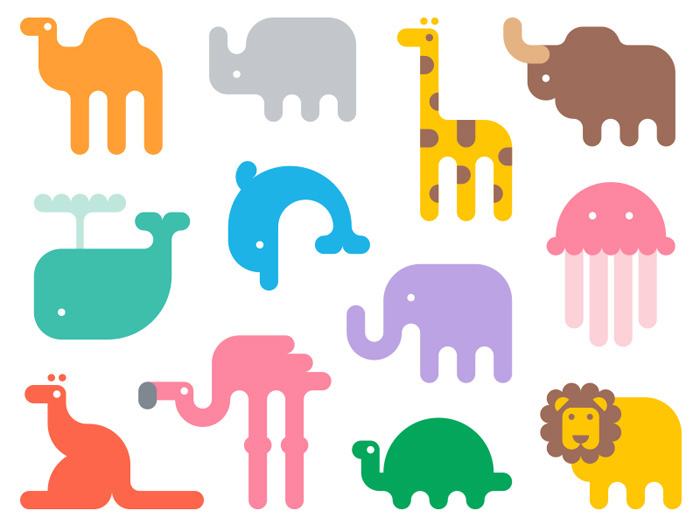

Design Blogs

Throughout the semester, I have been reading some of the blogs listed within the syllabus in the Designerly Curiosity list. Although some were outdated or stopped producing new articles, most of the blogs listed were interesting. I enjoyed a lot of articles from Mashable; however, two blog posts in which I enjoyed the most were from A List Apart and Design Work Life.
First, the A List Apart blog post titled “UX in the Age of Personalization” was all about how far personalization goes in the realm of our online activity, whether that be the home screen, emails, blogs, etc. I would definitely agree with the points made in this post. In my experiences, I have personally seen lots of customization especially on Apple products, including browser navigation bars, wallpapers, the customization of apps, etc. The article stated more about user experience. I would agree with the points made, and even extend to say that designers have almost become servants in the sense that they exist to serve the user. In this day in age with personalization, the designer must design with intention to please the user and allow the user to express themselves through the designer’s creation. I specifically liked the conversation with the content model and levels of importance on a webpage.
The second blog post that I enjoyed was on the Design Work Life blog called “Alliteration Inspiration: Zoo’s & Zzz’s”. This is but one of a series of posts created to spark inspiration in artists. I loved the ideas and graphics on the zoo images paired with the sleeping vectors and advertisements. Also, I appreciated the detailed graphics within the zoo brochures and maps. In all, the blog posts have given me a lot of inspiration.